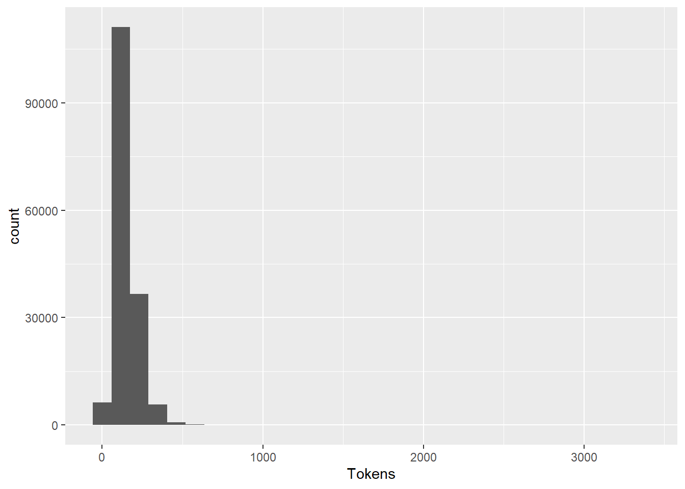

Chapter 4 Data Check and Clean
library(knitr)
knitr::opts_chunk$set(echo = TRUE, warning = FALSE, message = FALSE)
library(quanteda)
library(dplyr)
library(ggplot2)
library(tidytext)In this chapter, we describe the different operation of checking and cleaning that should be necessarily realized before any sound exploration of corpus. The majority of the procedures described here can not be done automatically and implies a human expertise at each step in order to control the results and propose remediations in case of problems.
4.1 Prerequites
The operations will be realized jointly with the two packages quanteda and tidytext. In the majority of case, we will use quanteda but in some specific situations tidytext will appear more adapted and will be used, thanks to (relatively) easy possibilities of exchange between the two format of dta storage of corpora.
- The reader non familiar with quanteda should have a look at Quick Start available on the website of the project :
https://quanteda.io/articles/quickstart.html
- The reader non familiar with tidytext will find detailed explnation in the following book :
4.2 EXAMPLE 1 : Cleaning a text+description corpus
We start by loading the corpus of news from the french newspaper Sud-Ouest that has been extract from .csv and transform in quanteda corpus in the previous chapter (ref). we also transform the time variable in date and sort the news by historical order.
qd<-readRDS("_data/qd/stories_41372.Rdata")
qd$date<-as.Date(qd$date)
qd<-qd[order(qd$date)]
str(qd)## 'corpus' Named chr [1:81653] "« Sud Ouest » : Pierre Veilletet est mort.\n." ...
## - attr(*, "names")= chr [1:81653] "text66408" "text77986" "text78223" "text66409" ...
## - attr(*, "docvars")='data.frame': 81653 obs. of 4 variables:
## ..$ docname_: chr [1:81653] "text66408" "text77986" "text78223" "text66409" ...
## ..$ docid_ : Factor w/ 81653 levels "text66408","text77986",..: 1 2 3 4 5 6 7 8 9 10 ...
## ..$ segid_ : int [1:81653] 1 1 1 1 1 1 1 1 1 1 ...
## ..$ date : Date[1:81653], format: "2013-01-08" "2013-01-10" ...
## - attr(*, "meta")=List of 3
## ..$ system:List of 5
## .. ..$ package-version:Classes 'package_version', 'numeric_version' hidden list of 1
## .. .. ..$ : int [1:3] 2 1 0
## .. ..$ r-version :Classes 'R_system_version', 'package_version', 'numeric_version' hidden list of 1
## .. .. ..$ : int [1:3] 4 0 2
## .. ..$ system : Named chr [1:3] "Windows" "x86-64" "CIST"
## .. .. ..- attr(*, "names")= chr [1:3] "sysname" "machine" "user"
## .. ..$ directory : chr "C:/claude/git/newsbook"
## .. ..$ created : Date[1:1], format: "2020-07-08"
## ..$ object:List of 2
## .. ..$ unit : chr "documents"
## .. ..$ summary:List of 2
## .. .. ..$ hash: chr(0)
## .. .. ..$ data: NULL
## ..$ user :List of 7
## .. ..$ media_id : int 41372
## .. ..$ media_name : chr "Sud Ouest"
## .. ..$ media_url : chr "http://www.sudouest.fr/"
## .. ..$ media_country: chr "FRA"
## .. ..$ data_source : chr "Media Cloud "
## .. ..$ data_time : chr "Special extraction"
## .. ..$ data_author : chr "Elaborated by Claude Grasland"This structure of data appears a bit tricky at first glance (especially for old user of quanteda that has experimented modification between version 1 and 2 …) but it offers very good guaranties of quality and efficiency. As explained by the author of the quanteda package :
A corpus is designed to be a “library” of original documents that have been converted to plain, UTF-8 encoded text, and stored along with meta-data at the corpus level and at the document-level. We have a special name for document-level meta-data: docvars. These are variables or features that describe attributes of each document.A corpus is designed to be a more or less static container of texts with respect to processing and analysis. This means that the texts in corpus are not designed to be changed internally through (for example) cleaning or pre-processing steps, such as stemming or removing punctuation. Rather, texts can be extracted from the corpus as part of processing, and assigned to new objects, but the idea is that the corpus will remain as an original reference copy so that other analyses – for instance those in which stems and punctuation were required, such as analyzing a reading ease index – can be performed on the same corpus.
With the new data structure it is for example easy to extract a specific text from the corpus with an extractor, called texts(). We can also have an easy access to information associated to each document like the date in our example. For example the news 666 is defined by :
## text49394
## "Béarn : un technicien électrocuté par une ligne à 63 000 volts.\n.Le technicien, qui était sur une nacelle, aurait été victime d’un arc électrique. La police a ouvert une enquête.Un dramatique accident s’est produit jeudi après-midi vers 16 h 30 sur le site Euralis à Lescar. Un homme est mort électrocuté alors qu’il travaillait sur une nacelle à une dizaine de mètres du sol, à... Lire la suite"## [1] "2013-04-19"For those who really don’t want to use quanteda, it is also simple to convert it to other format and in particular a simple data.frame where we can find only the id of document, the text and the document level information. But we have lost all the other information like the document metadata.
## doc_id
## 1 text66408
## 2 text77986
## 3 text78223
## 4 text66409
## 5 text2245
## 6 text55308
## text
## 1 « Sud Ouest » : Pierre Veilletet est mort.\n.
## 2 Municipales à Pau : Bayrou entretient le suspense.\n.
## 3 Algérie : Yann Desjeux, l’otage originaire du Pays basque, tué vendredi.\n.
## 4 Bègles : il avait conçu et réalisé le dernier album d’Yvette Horner.\n.
## 5 Le football pleure Jacques Grimonpon.\n.
## 6 Mariage pour tous : Jean Lassalle a dit non.\n.
## date
## 1 2013-01-08
## 2 2013-01-10
## 3 2013-01-18
## 4 2013-01-20
## 5 2013-01-25
## 6 2013-02-124.2.1 length of texts
We can use the summary command applied to the whole corpus in order to obtain for each text the number of sentences and words. This operation can take some time because quanteda will proceed to a tokenization of the corpus. We suggest to store this information in the quanteda object.
# Compute number of sentences and tokens
tokeninfo <- summary(qd,length(qd))
#store in quanteda object
docvars(qd, field="Tokens")<-tokeninfo$Tokens
docvars(qd, field="Sentences")<-tokeninfo$Sentences
# Visualize
head(docvars(qd))## date Tokens Sentences
## 1 2013-01-08 11 1
## 2 2013-01-10 10 1
## 3 2013-01-18 15 1
## 4 2013-01-20 14 1
## 5 2013-01-25 7 1
## 6 2013-02-12 11 14.2.1.1 What is the distribution of the number of sentences ?
| x | Freq |
|---|---|
| 1 | 1950 |
| 2 | 287 |
| 3 | 12772 |
| 4 | 30262 |
| 5 | 23324 |
| 6 | 9578 |
| 7 | 2719 |
| 8 | 568 |
| 9 | 141 |
| 10 | 37 |
| 11 | 11 |
| 12 | 2 |
| 18 | 1 |
| 57 | 1 |
The distribution appears regular with the exception of a very strange news with 57 sentences. It appears as a single case of full text ! We decide therefore to eliminate all texts with length > 10 sentences and visualize the result.

N.B. At this point, it is also possible to harmonize the number of sentences in the datasets.But rather than deleting the “long” texts", it appears better to keep only the k first sentences of each text with the corpus_reshape function. This function can transform the initial text in sentences but also do the reverse operation. So, our program could look like this. Note that the operation can take some time on large corpora.
4.2.1.2 What is the distribution of the number of tokens ?
 One more time, we observe some strange behavior with some very short news. We can therefore decide to harmonize and keep only the news with a value of 50 to 125 tokens.
qd<-corpus_subset(qd,Tokens>50)
qd<-corpus_subset(qd,Tokens<125)
p<-ggplot(docvars(qd),aes(x=Tokens))+geom_histogram(stat_bin=25)
p